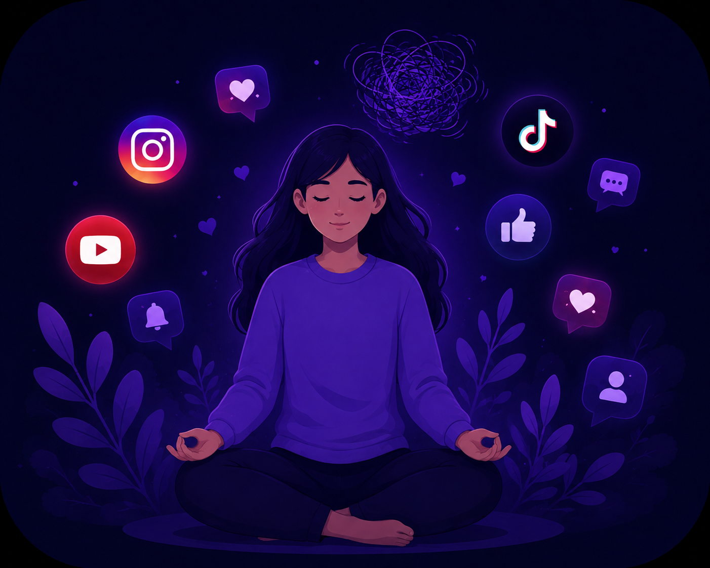
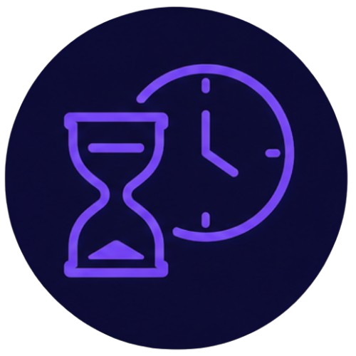
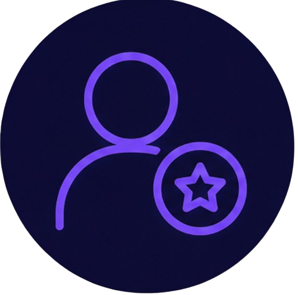
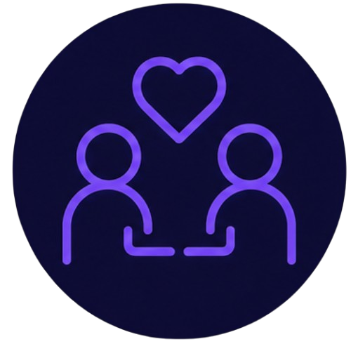

Consejos para un
Uso Consciente
Pequeñas acciones diarias pueden ayudarte a mantener un equilibrio saludable con las redes sociales.


Establece límites de tiempo
Define cuánto tiempo vas a pasar en tus redes sociales cada día.
Ver más
Establecer un horario puede ayudarte a evitar pasar demasiado tiempo conectado. Puedes decidir momentos específicos para revisar tus redes y tomar descansos durante el día.
Activa avisos conscientes
Desactiva notificaciones que no son relevantes para evitar distracciones.
Ver más
No todas las notificaciones son importantes. Mantener solamente las necesarias puede ayudarte a concentrarte mejor en tus actividades y evitar revisar el celular constantemente.

Sigue cuentas que te inspiren
Rodéate de contenido positivo, educativo y motivador.
Ver más
Revisa las cuentas que sigues y pregúntate si su contenido te aporta algo positivo. También puedes dejar de seguir contenido que te genere estrés, presión o desánimo.

Conecta en la vida real
No olvides compartir tiempo con las personas importantes.
Ver más
Las redes sociales pueden ser una forma de comunicarnos, pero no deben reemplazar completamente los momentos con familiares y amigos. Compartir tiempo cara a cara también fortalece nuestras relaciones.
Define tu propósito
Usa las redes sociales con un objetivo claro.
Ver más
Antes de entrar a una red social, piensa qué quieres hacer: informarte, comunicarte, aprender o entretenerte. Tener un propósito ayuda a evitar entrar por costumbre y quedarse conectado sin darse cuenta.
Sé selectivo con la información
No todo lo que ves es real. Aprende a cuestionar.
Ver más
Antes de compartir una publicación, revisa de dónde viene la información y si otras fuentes confiables dicen lo mismo. Esto ayuda a evitar la desinformación y a desarrollar un pensamiento más crítico.